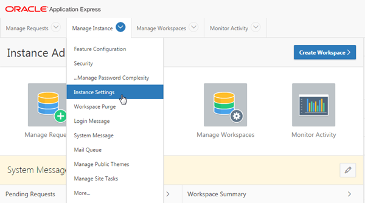
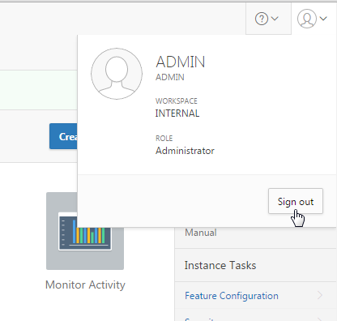
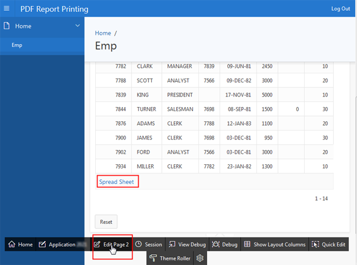
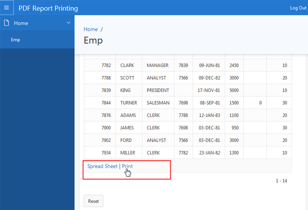
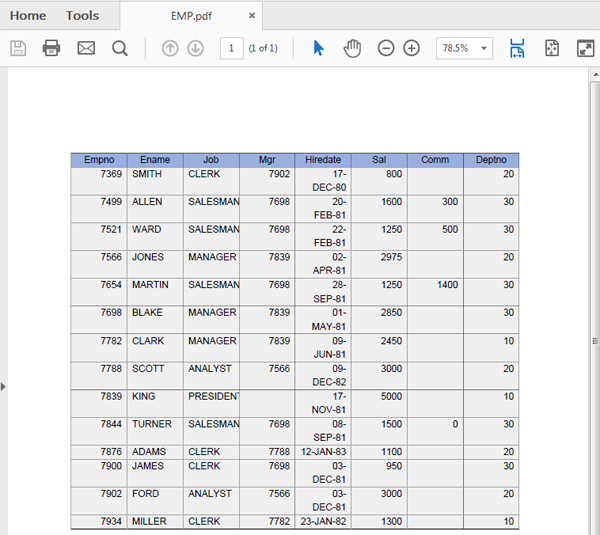

Before You Begin
Purpose
This tutorial shows how to create PDF reports using the Oracle REST Data Services and Oracle Application Express 5.1.
Time to Complete
Approximately 20 minutes.
Overview
Oracle Application Express (Oracle APEX) is a rapid web application development tool for the Oracle database. Using only a web browser and limited programming experience, you can develop and deploy professional applications that are both fast and secure. Oracle Application Express is available with the Oracle Database, whether it's on-premises or in an Oracle Database Cloud Service.
You can configure a classic report region to print by exporting it to several different formats such as Adobe Portable Document Format (PDF), Microsoft Word Rich Text Format (RTF), or Microsoft Excel Format (XLS), or Extensible Markup Language (XML). Oracle Application Express provides three report printing configuration options. They are:- Oracle REST Data Services: This option can be selected if you are using Oracle REST Data Services 2.0 or newer. This option enables you to use the basic printing functionality, which includes creating report queries and printing report regions using the default templates provided in Application Express and using your own customized XSL-FO templates.
- External (Apache FOP): This option can be selected if you are using Apache FOP on an external J2EE server. This option also enables you to use the basic printing functionality, which includes creating report queries and printing report regions using the default templates provided in Application Express and using your own customized XSL-FO templates.
- Oracle BI Publisher: This option can be selected if you are using a licensed version of Oracle BI Publisher. This option enables you to take report query results and convert them from XML to RTF format using Oracle BI Publisher. This option is useful when you want to upload your own customized RTF or XSL-FO templates for printing reports within Application Express.
Please keep in mind the following while running this tutorial:
- Logging into your Oracle Application
Express workspace: Your Oracle
Application Express workspace may reside in an
on-premises Oracle Database or in Oracle Database
Cloud Services. The login credentials differ
depending on where your workspace is located:
- Logging into Oracle Application Express in a Oracle Database Cloud Service: Reference the Oracle Help Center for your Oracle Database Cloud Service. To do this, go to the Oracle Help Center for Cloud, and select Platform or Infrastructure (depending on your service). From here, select your Database Cloud Service and the Get Started page will appear.
- Logging in to Oracle Application Express on-premises: From your browser, go to the location of your on-premises installation of your Oracle Application Express workspace provided by your Workspace Administrator.
- Application ID: Screenshots in this tutorial show a blurred Application ID. Your Application ID can be any value assigned automatically while creating the application.
- Schema: If you are accessing an Oracle Application Express workspace in Database Schema Service, you have one schema assigned to you with a schema name that you cannot change. If you are accessing the workspace in an on-premises Oracle database, you may have more than one schema assigned to your workspace by the Oracle Application Express Instance Administrator.
What Do You Need?
Before starting this tutorial, you should:
- Visit Oracle Help Center for Cloud.
- Have access to an Oracle Database 11g or later release, either on-premises or in a Database Cloud Service.
- Install Oracle Application Express Release 5.1 into your Oracle Database (for on-premises only).
- Provision at least one Oracle Application Express user. See Creating New User Accounts in Oracle Application Express Administration Guide.
Setting up the Print Server From Oracle Application Express Instance Administration
Note: This section only applies to Oracle Application Express on-premises installations or Database Cloud Services that do not already have the Print Server setup to Oracle Rest Data Services.
In this section, you log into Oracle Application Express as an Instance Administrator and select Oracle REST Data Services (ORDS) as Print Server. Perform the following steps:-
Open the Oracle Application Express Administration Services by entering http://hostname:port/apex/apex_admin in a web browser and press the Enter key.
View Image
Description of this image -
Enter admin for User Name, the Instance Administrator password you specified when you installed Oracle Application Express for Password, and click Sign In to Administration.
Note: Alternatively, you can enter http://hostname:port/apex/ in a web browser, and click the Enter key. Once the Log In screen appears, enter INTERNAL for Workspace, ADMIN for User Name, the Instance Administrator password you specified when you installed Oracle Application Express for Password, and click Sign In.View Image
Description of this image -
From the Oracle Application Express Administration home page, click the down arrow next to Manage Instance, and select Instance Settings.
View ImageDescription of this image -
Click the Report Printing tab.
View Image
Description of this image -
Select Oracle REST Data Services for Print Server.
View ImageDescription of this image -
Click Apply Changes.
View Image
Description of this image -
The Report Printing settings are saved. Click Sign Out.
View ImageDescription of this image
Creating a Database Application with a Classic Report
-
In the Application Express login page, enter the following login credentials and click Sign In:
Workspace: obe
Username: obe
Password: oracle
View Image
Description of this image -
From the Oracle Application Express home page, click the down arrow next to Application Builder, and select Database Applications.
View Image
Description of this image -
Click Create.
View Image
Description of this image -
Accept the default, and click Next >.
View ImageDescription of this image -
Enter PDF Report Printing for Name, and click Next >.
View Image
Description of this image -
You want to add a Classic Report to this application. Click Add Page.
View Image
Description of this image -
Select the Report icon. Select Home(1) for Parent Page, Table for Page Source, EMP for Table Name, Classic for Report Type, and click Add Page.
View Image
Description of this image -
Click Next >.
View Image
Description of this image -
Accept the default, and click Next >.
View Image
Description of this image -
Select Application Express Accounts for Authentication Scheme, and click Next >.
View ImageDescription of this image -
Click Create Application.
View ImageDescription of this image -
Click the Run Application icon.
View Image
Description of this image -
Enter your Oracle Application Express credentials, and click Log In.
View ImageDescription of this image -
The PDF Report Printing application's home page loads. Click Emp in the navigation menu.
View ImageDescription of this image -
Scroll down to the end of the report, and notice that it does not have a Print option. In the next section, you will enable PDF Printing for this report. Click Edit Page 2 in the developer toolbar.
View ImageDescription of this image
Enabling PDF Printing for the Classic Report
-
In the Rendering tab, under EMP, click Attributes.
View Image
Description of this image -
In the property editor, under Printing, select Yes for Enabled.
View Image
Description of this image -
Click Save and Run Page.
View Image
Description of this image -
Scroll down to the end of the report. Notice that Print option is now included in this report. Click Print.
View ImageDescription of this image -
A dialog to save the report as a PDF file, opens. Click Save.
View ImageDescription of this image -
Open the saved PDF file to see the report details. It also has option to print this report to a printer.
View ImageDescription of this image
Want to Learn More?
- Printing Report Regions
- Other tutorials on
Oracle
Database Cloud Service - Database Schema
Service
- Oracle
Technology Network Application Express Home
Page